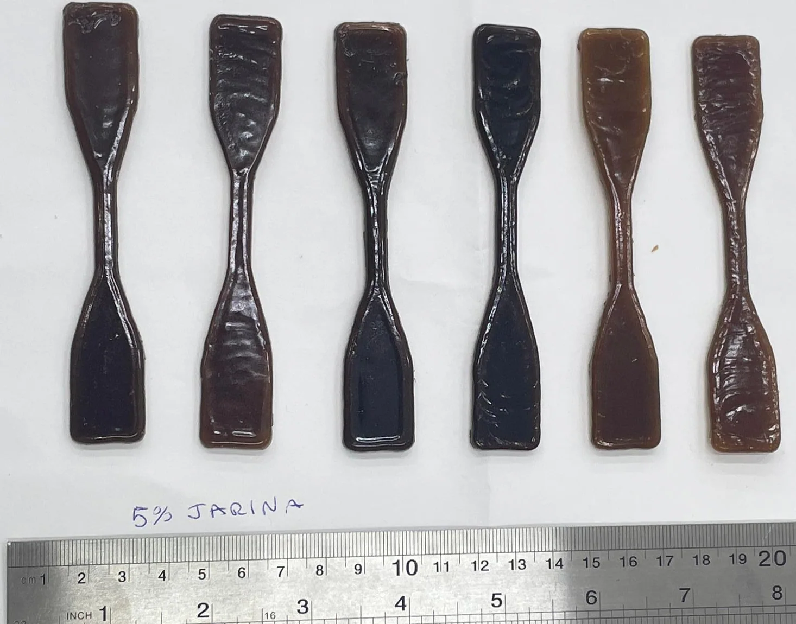

2026
INSTITUT PASCAL · FRANCE
Robotics and robot-control internship
Institut Pascal · Clermont-Ferrand · 2026
Franka FR3 Cartesian control, RCM constraints, image-based visual servoing and physical robot validation.
View case study ↗Choose a project, or jump to the tools and software I use.
 P–01Visual servoing · RCMFranka FR3
P–01Visual servoing · RCMFranka FR3 P–02Vision · UR3e3D reconstruction
P–02Vision · UR3e3D reconstruction P–03CAD · FEABaja UFAM
P–03CAD · FEABaja UFAM
P–04Materials · ResearchPLA + Jarina P–05Learning · NavigationTurtleBot3
P–05Learning · NavigationTurtleBot3 ↗CAD · Robotics · ProgrammingTools & software
↗CAD · Robotics · ProgrammingTools & software P–01 · Franka FR3Visual servoing · RCMP–02 · 3D reconstructionVision · UR3eP–03 · Baja UFAMCAD · FEAP–04 · PLA + JarinaMaterials · ResearchP–05 · TurtleBot3Learning · NavigationTools & softwareCAD · Robotics · Programming
P–01 · Franka FR3Visual servoing · RCMP–02 · 3D reconstructionVision · UR3eP–03 · Baja UFAMCAD · FEAP–04 · PLA + JarinaMaterials · ResearchP–05 · TurtleBot3Learning · NavigationTools & softwareCAD · Robotics · ProgrammingHELLO, I AM
Robotics · Mechanical design · Simulation
Pursuing a dual engineering degree at SIGMA Clermont and UFAM, I combine mechanical design, numerical simulation and experimental robotics. My work spans braking-system development and sustainable composite materials, as well as robot control and visual servoing on a physical platform.
Five selected projects in mechanical engineering, robotics and experimentation. Open any hexagon for the technical case study.
01 / 05Development and experimental evaluation of laparoscopic probe manipulation with a remote-center-of-motion constraint and RGB-D visual guidance.
02 / 05Point-cloud perception and 3D reconstruction workflow studied for an UR3e-based robotics project.
Jarina powder processing, PLA/copaiba blends (0–5%), machined ASTM D638 mold and critical analysis of tensile-testing limitations.
 04 / 05
04 / 05Mechanical design work on an off-road student vehicle, covering CAD development and structural analysis.
05 / 05Two complementary parts of our TurtleBot3 work: a ROS 2 autonomous-delivery architecture based on Nav2 and a simulation framework comparing three reinforcement learning methods for navigation and obstacle avoidance. The detailed report below evaluates the RL algorithms; it does not establish that the delivery mission was optimized by those algorithms.
Institut Pascal · Clermont-Ferrand · 2026
Franka FR3 Cartesian control, RCM constraints, image-based visual servoing and physical robot validation.
View case study ↗Federal University of Amazonas (UFAM) · May–August 2024 · 156 hours
Supported mechanical-engineering students in technical drawing, CAD assignments and SolidWorks practice.
Mechanical engineering program · Dual degree with UFAM
France · Currently studyingMechanical engineering · Home institution of the dual-degree program
Brazil · Currently studyingMaster 2 in Mechanics · Materials, Structures, Reliability and Machines (MSFM)
France · Currently studyingParticipation in mechanical-engineering events and a technical lecture. Certificates confirm attendance, not scientific publication.
Manaus · August 20–22, 2024 · 30 h
Attendee at the international mechanical and industrial engineering congress.
View certificate ↗Manaus · December 11–13, 2024 · 30 h
Attendee at the mechanical-engineering academic week.
View certificate ↗XI SEMEC · December 12, 2024 · 6 h
Technical lecture attended during XI SEMEC.
View certificate ↗Collaborative research and academic presentations. The editorial status of the manuscript below has not yet been confirmed.
Joint research on LAnD: image-based guidance of a laparoscopic ultrasound probe toward first contact, under an RCM constraint with force detection. Evaluated on a silicone liver phantom with a Franka FR3.
Presentation of UFAM PIBIC/PAIC research on PLA and natural jarina-powder reinforcement.
Part and assembly design · braking systems · structural analysis · prototyping · technical drawings
Finite element analysis (FEA) · mechanical calculations · MATLAB · experimental testing and validation
Robot kinematics and control · ROS 2 · Cartesian control · RCM · image-based visual servoing (IBVS) · autonomous navigation
RGB-D vision · 3D reconstruction · point clouds · image processing · mechanical tests · polymer composites